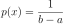

numpy.random.uniform¶
-
numpy.random.uniform(low=0.0, high=1.0, size=None)¶ Draw samples from a uniform distribution.
Samples are uniformly distributed over the half-open interval
[low, high)(includes low, but excludes high). In other words, any value within the given interval is equally likely to be drawn byuniform.Note
New code should use the
uniformmethod of adefault_rng()instance instead; see random-quick-start.- Parameters
- lowfloat or array_like of floats, optional
Lower boundary of the output interval. All values generated will be greater than or equal to low. The default value is 0.
- highfloat or array_like of floats
Upper boundary of the output interval. All values generated will be less than high. The default value is 1.0.
- sizeint or tuple of ints, optional
Output shape. If the given shape is, e.g.,
(m, n, k), thenm * n * ksamples are drawn. If size isNone(default), a single value is returned iflowandhighare both scalars. Otherwise,np.broadcast(low, high).sizesamples are drawn.
- Returns
- outndarray or scalar
Drawn samples from the parameterized uniform distribution.
See also
randintDiscrete uniform distribution, yielding integers.
random_integersDiscrete uniform distribution over the closed interval
[low, high].random_sampleFloats uniformly distributed over
[0, 1).randomAlias for
random_sample.randConvenience function that accepts dimensions as input, e.g.,
rand(2,2)would generate a 2-by-2 array of floats, uniformly distributed over[0, 1).Generator.uniformwhich should be used for new code.
Notes
The probability density function of the uniform distribution is

anywhere within the interval
[a, b), and zero elsewhere.When
high==low, values oflowwill be returned. Ifhigh<low, the results are officially undefined and may eventually raise an error, i.e. do not rely on this function to behave when passed arguments satisfying that inequality condition.Examples
Draw samples from the distribution:
>>> s = np.random.uniform(-1,0,1000)
All values are within the given interval:
>>> np.all(s >= -1) True >>> np.all(s < 0) True
Display the histogram of the samples, along with the probability density function:
>>> import matplotlib.pyplot as plt >>> count, bins, ignored = plt.hist(s, 15, density=True) >>> plt.plot(bins, np.ones_like(bins), linewidth=2, color='r') >>> plt.show()